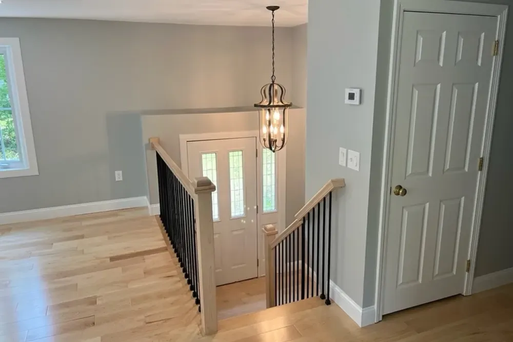
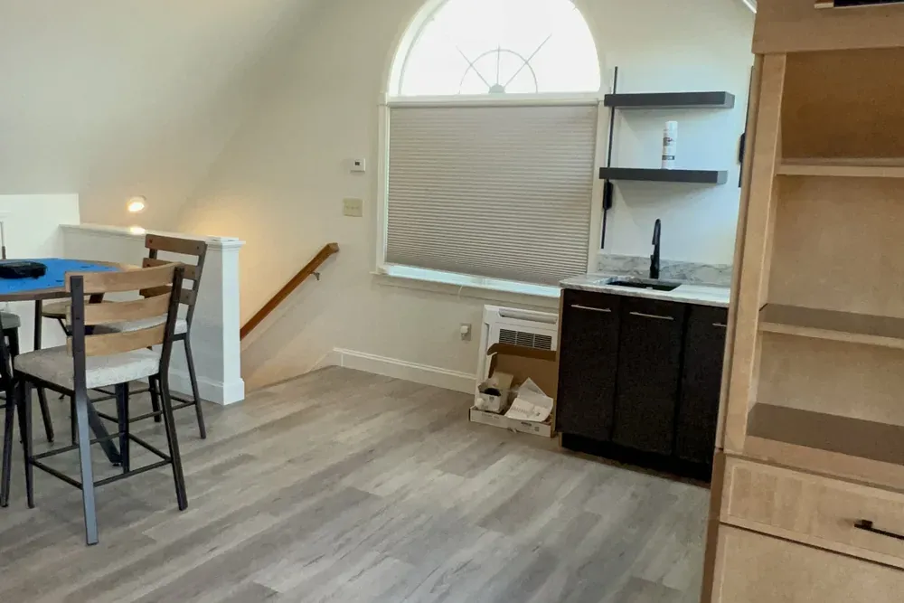
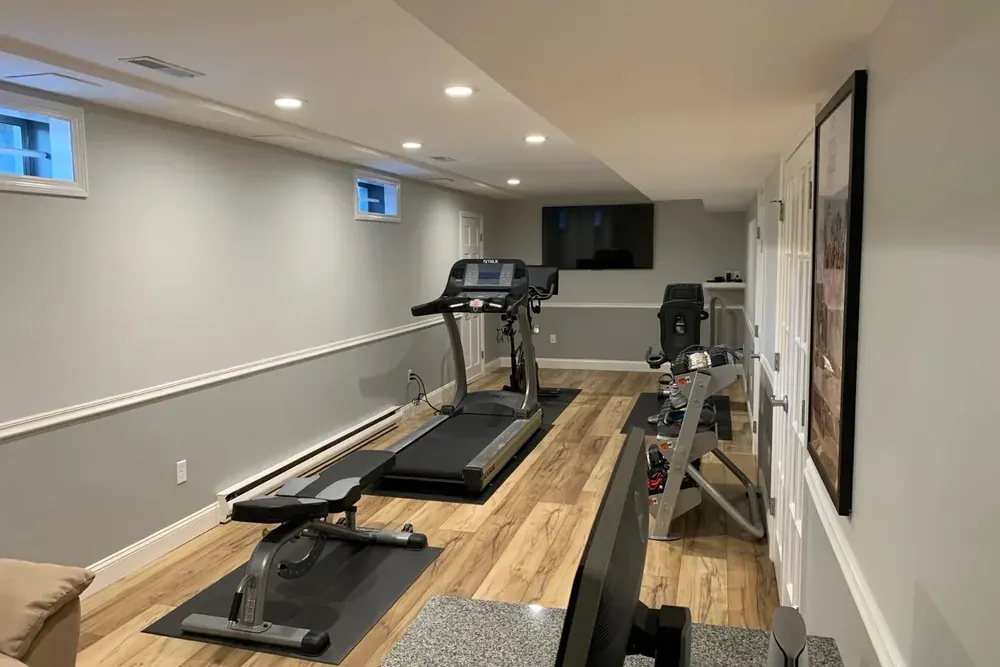
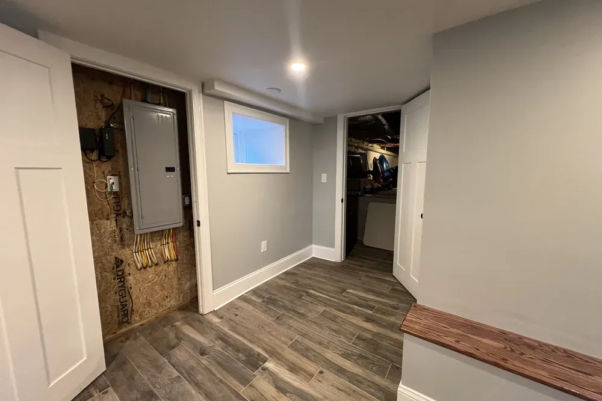
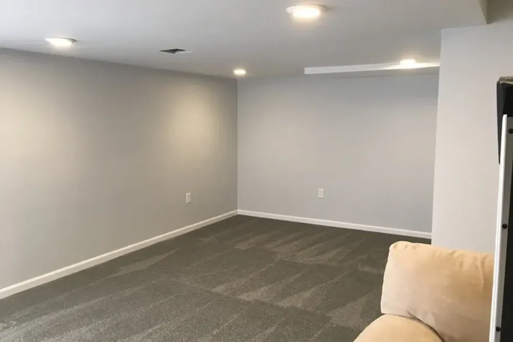
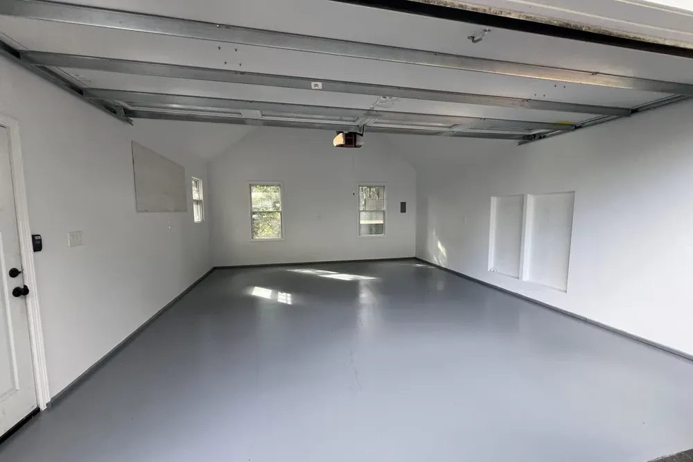
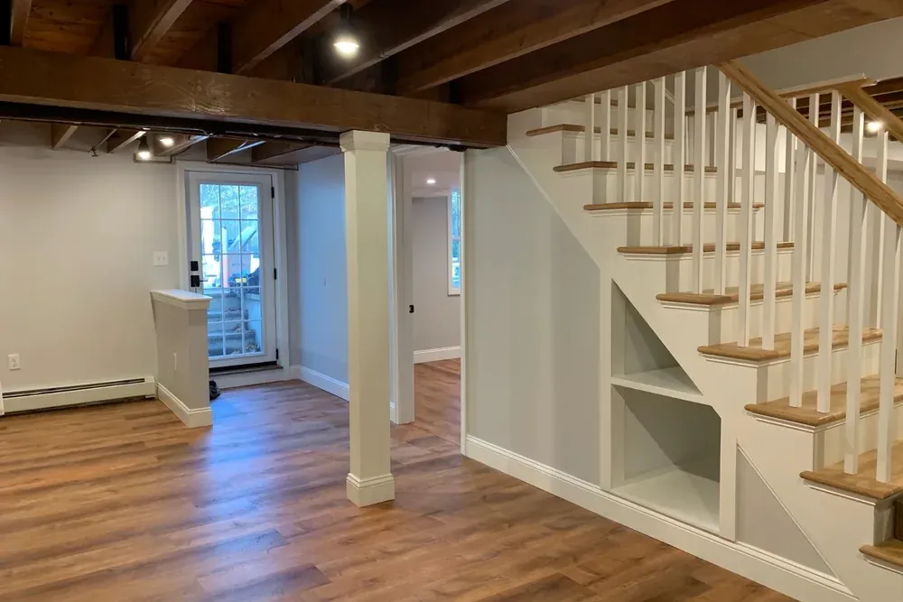
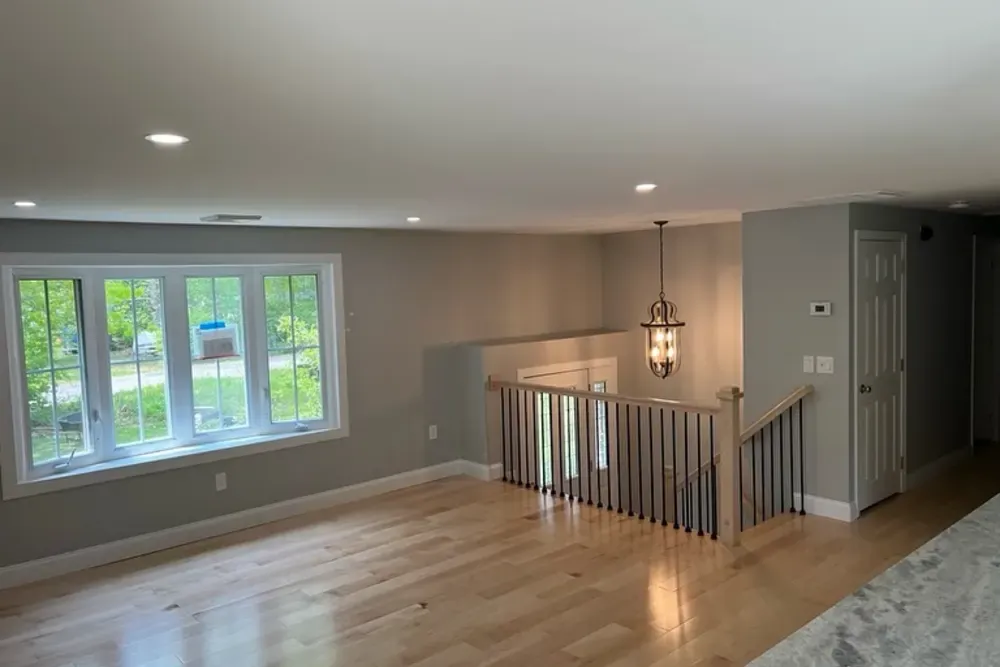
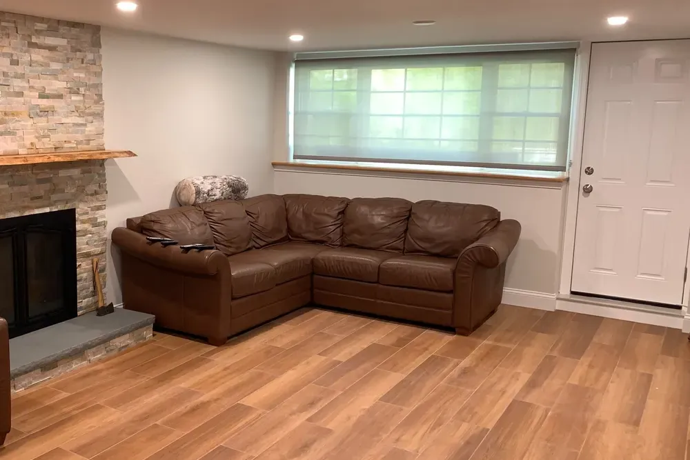

Interior painting in Wilmington, MA
Interior painting Wilmington MA homes need: walls repaired first, then a clean finish
Interior painting in Wilmington with DeFaria Construction covers walls, ceilings, trim, doors and cabinets, with the drywall and plaster repairs done by the same team before the first coat, for Middlesex County homes of every age.
Our work
From bare framing to painted, finished walls
Watch a DeFaria room go from open studs to drywall, primer and two coats of paint. A Wilmington painting job follows the same rule: fix the surface first, then paint.
Get a Free Estimate
Local search focus
Interior painters for Wilmington homes, from the walls underneath to the last coat.

Across Wilmington Center, North Wilmington, Wilmington Junction and Silver Lake, Wilmington mixes colonial-era and Cape-style homes around the historic center with postwar ranches, capes and split-levels across North Wilmington. Paint only looks as good as the surface under it, so a Wilmington job starts with cracks, nail pops, loose plaster and stained ceilings before any color goes on.
This page is for Wilmington homeowners comparing interior painters. It covers local homes, real 2026 prices, prep, older plaster and lead paint, colors for New England light and how the work runs while you live at home.
- Clear estimate conversations before the project starts.
- Direct communication with the homeowner from walkthrough to final walkthrough.
- Local coverage across Wilmington and the wider Middlesex County area.
Wilmington, MA
Interior painting in Wilmington, Massachusetts

This page is about Wilmington, Massachusetts, in Middlesex County, not Wilmington in Delaware or North Carolina. Most homes here are post-war Capes, ranches, split-levels and Colonials, with plenty of busy family rooms, halls and stairways.
In Capes, the upstairs bedrooms often have sloped ceilings and knee walls where walls and ceiling meet at odd angles, which takes careful cutting in. Families with kids usually choose washable satin or eggshell in halls and mudrooms.
- Sloped ceilings and knee walls in Capes cut in by hand
- Washable finishes for halls and mudrooms
- Quick room-by-room schedule for busy families
Busy family homes
Repainting a busy Wilmington family home room by room

Many Wilmington homes are full family houses with kids, pets and a lot of traffic through the halls, kitchen and stairway. Repainting them usually means choosing finishes that wash well, fixing the dings and nail pops that years of use leave behind, and scheduling so bedrooms are back in use by bedtime.
Satin or a scrubbable eggshell in halls, mudrooms and kids' rooms makes fingerprints easy to clean, and semi-gloss enamel on doors and trim stands up to bumps. We leave labeled touch-up paint for every room so small marks can be fixed in minutes later.
- Scrubbable finishes in halls and kids' rooms
- Enamel on doors and trim for bumps
- Bedrooms back in use by the end of the day
- Labeled touch-up paint left for every room
Floors and paint
Painting before or after new floors in a Wilmington home

If new flooring is planned, paint the walls and ceilings first and install the floors after, then finish with the baseboard and a final trim coat. That way no paint drips land on new floors, and the baseboard is painted where it meets the finished floor height.
If the floors are being refinished instead, sanding creates fine dust, so the floor work is done first and the final wall coat comes after. We coordinate both schedules so you are not out of the rooms twice.
- Walls and ceilings before new floors
- Baseboard set and painted last
- Floor refinishing first, final wall coat after
The scope
What a full Wilmington interior painting job covers
In Wilmington, colonial-era homes near the historic center and postwar ranches and split-levels across North Wilmington often shape how an interior project is planned.
- Kitchen and bathroom cabinet painting.
- Stain sealing on ceilings and walls.
- Clean-up and a walkthrough room by room.
Interior painting in Wilmington does not usually need a building permit, but repairs that move walls, wiring or plumbing do, and those run through the Town of Wilmington Building Inspector's Office. In homes built before 1978, lead-safe work practices apply before any old paint is sanded or scraped.
Cost
How much does interior painting cost in Wilmington?

A typical Wilmington bedroom or living room runs about $450 to $1,200 for walls with two coats and minor patching. A 1,500 square foot home with walls, ceilings and trim usually lands around $6,000 to $12,000, and a 2,000 square foot home around $8,000 to $16,000.
- The condition of the walls, not just their size.
- Ceiling height and access over stairs.
- Cabinets, which run about $4,000 to $9,000 for a kitchen.
- Paint line and sheen chosen for each room.
Because colonial-era homes near the historic center and postwar ranches and split-levels across North Wilmington often shape how an interior project is planned in Wilmington, prep time is measured room by room at the walkthrough, not guessed.
DeFaria gives a fixed price per room in the Wilmington estimate, so you can choose exactly what to paint and the number does not change once work starts.
Process
How a Wilmington interior painting job runs, step by step
Every Wilmington painting job follows the same order, so the house stays livable and the finish stays clean.
- Walkthrough, color and sheen plan, and a fixed estimate.
- Furniture moved and covered, floors protected.
- Cracks taped, holes patched, nail pops re-screwed.
- Patches sanded flush and spot primed, stains sealed.
- Ceilings first, then walls, then trim and doors.
- Touch-ups, hardware back on, furniture back in place.
- Final walkthrough with you, room by room.
If the Wilmington project also includes drywall, trim or other repairs that need a permit, DeFaria coordinates it with the Town of Wilmington Building Inspector's Office before painting starts.
Most Wilmington rooms are done in one to two days, and most full interiors in one to two weeks.
Materials
Paint, primer and sheen choices for Wilmington homes

In Wilmington, the paint line matters less than the prep and primer under it, so both are written into the estimate.
- Spot primer on every patch so it does not flash through.
- Hard cabinet enamel for kitchen and vanity cabinets.
- Leveling enamel on doors and trim for fewer brush marks.
- Washable finishes in high-traffic halls and stairwells.
Around Wilmington Center and North Wilmington, colonial-era homes near the historic center and postwar ranches and split-levels across North Wilmington often shape how an interior project is planned, so materials and waterproofing are matched to the home instead of picked from a generic list.
When to repaint
Signs a Wilmington home is ready for fresh interior paint
A few clear signs it is time to repaint inside a Wilmington home:
- Cracks, nail pops and patched spots show through the paint.
- Ceilings have water stains or yellowing.
- Scuffed halls and stairwells no longer wash clean.
- Colors from a previous owner do not fit how you live.
- You plan to sell in the spring and want rooms to photograph well.
These come up often in Wilmington homes near Wilmington Center and North Wilmington.
Prep
Prep is the job in a Wilmington house
A Wilmington wall can look fine at noon and terrible at 4 p.m. in January, when the sun sits low and every flaw throws a shadow. We check walls with a work light at that same low angle before painting.
Whatever shows up is fixed and primed first, so the finish looks smooth in every season and every kind of light.
For homes near Wilmington Center, North Wilmington and Wilmington Junction, the Wilmington interior painting is planned room by room with a fixed price.
In Wilmington we cover Wilmington Center, North Wilmington, Wilmington Junction and Silver Lake, so the interior painting fits the block it is on.
- Hardware and outlet covers removed, not painted around.
- Gaps at trim caulked for clean lines.
- Glossy surfaces scuffed and primed.
- Walls checked with a raking light before the finish coat.
Older homes
Painting older Wilmington homes: plaster, lead paint and oil-based trim
Many Wilmington houses have walls and trim older than modern latex paint. Plaster is repaired before painting, oil-painted trim gets a bonding primer, and in any home built before 1978 the prep follows lead-safe rules with containment and cleanup.
We test and plan for these at the walkthrough, so the price and the schedule do not change once the rooms are opened up.
- Plaster cracks re-secured and taped before painting.
- Lead-safe prep in homes built before 1978.
- Bonding primer over old oil-based trim.
- Profiles and detail on old trim kept crisp, not buried.
Color
Choosing colors that work in Wilmington light
The same paint looks different in every Wilmington room because the light is different. We bring samples to the walkthrough and paint test patches on the actual walls before the full job.
Keeping trim and ceiling whites consistent through the house ties the rooms together, and colors with a higher light reflectance value brighten basements and dark halls through the winter.
- Large test patches on two walls, checked at different times.
- Warm whites or greige for north-facing rooms.
- One trim and ceiling white through the house.
- Lighter colors with high light reflectance for dark spaces.
Details
Ceilings, trim, doors and stairwells in Wilmington homes
Ceilings and trim take the most skill and the most time. Ceilings show roller marks and water stains; trim and doors show every brush stroke and drip.
Ceilings are rolled first, with stains sealed before the finish coat. Trim is sanded, caulked and painted with a leveling enamel, and doors come off their hinges when that gives a smoother finish. Stair rails and balusters are painted by hand.
Whether the home sits near Wilmington Center, North Wilmington or Wilmington Junction, the Wilmington interior painting starts with what the walls need underneath.
Cabinets
Cabinet painting: a Wilmington kitchen refresh without a remodel

Many Wilmington kitchens have solid cabinet boxes with dated finishes. Painting them is detailed work: off with the doors, degrease, scuff, bonding primer and a hard enamel built for daily use.
Expect roughly $4,000 to $9,000 for a kitchen. Bathroom vanities and laundry cabinets can be painted in the same visit.
Winter
Why winter is a good time to paint inside a Wilmington home

Many Wilmington families paint before the holidays or before listing a house in the spring, and winter is when painting crews have the most open time for inside work.
The house stays heated, rooms are ventilated while paint cures and low-odor products keep the home livable. If you plan to sell in the spring, painting in January or February leaves time for touch-ups before photos.
Living at home
Living in your Wilmington home while we paint

A Wilmington painting job should not take over your house. We plan the sequence room by room, protect floors and furniture, and ventilate occupied rooms while low-odor paint cures.
At the end of each day the rooms in use are clean and usable, and you always know which rooms come next.
Across Wilmington neighborhoods like Wilmington Center, North Wilmington and Wilmington Junction, we plan the interior painting around how Middlesex County homes were actually built and finished.
Comparing quotes
How to compare interior painting quotes in Wilmington
A low painting quote in Wilmington often means fewer coats, no primer on patches or repairs left out. The way to compare is line by line.
Ask who does the work, whether the company is licensed and insured, and whether the price is fixed per room or an estimate that can change.
- How many coats are included, and is primer on patches included?
- Which paint brand and product line, not just the color?
- What repairs are included, and what costs extra?
- Are ceilings, trim and doors in the price?
One team
Repairs, trim and painting from one Wilmington team
Because DeFaria is a remodeling and carpentry company and not a paint-only crew, the same team that paints a Wilmington room can also fix what is wrong underneath: replace a cracked section of drywall, re-secure plaster, swap a damaged piece of trim or rehang a door that rubs.
That means one schedule and one price, instead of waiting for a handyman before the painters can start.
Wallpaper
Wallpaper removal before painting a Wilmington room
Many Wilmington homes still have wallpaper from past decades, sometimes two or three layers deep, and sometimes hung straight over unprimed plaster or drywall. Painting over it is a shortcut that shows: seams telegraph through the paint and the paper can bubble when it gets damp.
We score and steam or soak the paper, scrape it off, wash away the old paste, repair the surface underneath and seal it with a primer made for that job. When the paper was hung on raw drywall and the face tears, a skim coat brings the wall back to smooth before painting.
- Paper scored, steamed or soaked and scraped.
- Old paste washed off the wall.
- Torn drywall face sealed and skim coated.
- Primer chosen for walls that held wallpaper.
Kitchens and baths
Painting kitchens and bathrooms in Wilmington homes
Kitchens and bathrooms are the hardest rooms on paint. Steam, grease and constant cleaning wear a flat or matte finish out quickly, so these rooms get a satin or semi-gloss paint built for scrubbing and humidity.
Kitchen walls are degreased before painting so the new coat bonds, and bathroom ceilings with mildew are cleaned and treated before primer. We also check that the bath fan actually vents outside, because no paint can fix a room that never dries out.
- Satin or semi-gloss, moisture-resistant finishes.
- Kitchen walls degreased before primer.
- Mildew cleaned and treated on bath ceilings.
- Exhaust fan checked so the room can dry.
Basements
Painting a finished basement or lower level in Wilmington
Lower levels in Wilmington homes are often darker and cooler than the rest of the house, so color and light reflectance matter even more. Light, warm colors with a higher light reflectance value make a basement family room feel bigger.
Drywall in a finished basement is painted like any other room. Bare masonry is different: it needs to be dry, clean and free of efflorescence, and it takes a masonry primer or coating made for concrete. If the wall is damp, the moisture is solved first.
Before selling
Painting a Wilmington home before you sell
If you plan to list a Wilmington house in the spring, painting in the winter leaves time for touch-ups and staging before photos.
Neutral walls, clean white trim and repaired ceilings make rooms look larger and help buyers picture their own furniture. We can paint only the main rooms if the budget is tight and the rest of the house is in good shape.
Dark colors
Accent walls, dark colors and how many coats they need
Deep colors are popular in dining rooms, offices and powder rooms, but they need more planning. A tinted primer under a dark color saves a coat, and most deep colors still need two full finish coats to look even.
Going from dark back to light also takes extra coats, which is why a dramatic color change moves the price. We note the number of coats per room in the estimate so there are no surprises.
After painting
Caring for fresh paint after the job
Latex paint feels dry within hours but takes a few weeks to cure fully. During that time, avoid scrubbing walls and be gentle with furniture against them.
At the end of the job we leave labeled, sealed cans of each color and sheen, with the room written on the lid, so future touch-ups match.
Wall repair
Drywall and plaster repair: patch, skim coat or replace?
A Wilmington painting estimate always says how each wall will be repaired, because the repair decides how the finished room looks. Hairline cracks get taped and filled; a wall covered in old patches gets a skim coat; plaster that sags or sounds hollow is re-secured before anything else.
We would rather spend an extra day on a skim coat than paint over a wall that will crack again in the first winter.
- Hairline cracks taped and filled.
- Skim coat on walls with many patches or torn paper.
- Loose plaster re-secured to the lath.
- Damaged sections replaced and feathered in.
Application
Brush, roller or spray: how the paint goes on
The right tool depends on the surface. A Wilmington living room in daily use is cut in and rolled; a vacant house before a sale may be sprayed; detailed trim and old doors are brushed by hand.
Whatever the method, two finish coats over a primed, repaired surface are what make the color look even and last.
- Cut in by brush, rolled in the field on walls.
- Leveling enamel brushed on trim and doors.
- Spray for cabinets and empty rooms.
- Two finish coats over a primed surface.
Trim paint
Oil, latex or waterborne enamel for trim and doors
Trim and doors take the most wear in a Wilmington house, so the paint has to be hard and washable. We check whether the existing paint is oil or latex, prime with a bonding primer where needed, and finish with a durable enamel.
Waterborne enamels dry harder than standard wall paint, level out to hide brush strokes and do not yellow the way old oil paint does over time.
Project photos
Real DeFaria interiors, painted and finished
Real photos from DeFaria projects, not stock images, so Wilmington homeowners can see the finish level before requesting an estimate.
Areas covered
Interior painting across Wilmington neighborhoods
DeFaria Construction paints homes across Wilmington and nearby Middlesex County towns, with enough local context on this page to decide whether we are the right fit before you call.
Across Wilmington Center, North Wilmington and Silver Lake, Wilmington painting projects are matched to the age and condition of the walls.
- Wilmington Center
- North Wilmington
- Wilmington Junction
- Silver Lake
Reviews
What Wilmington homeowners say about DeFaria Construction
DeFaria Construction has a 5.0 rating from 15 reviews on Google. See all reviews on Google.
Luiz and subcontractors do great work. DeFaria Carpentry completed 2 bathroom renovations and we will be starting on a kitchen renovation in the fall. I highly recommend DeFaria Carpentry.
Luiz’s work is fabulous. Luiz renovated two bathrooms and our kitchen. Each step in the process moved along quickly and we finished earlier than expected. The crew was always pleasant to be around. We are very pleased with the quality of everything that Luiz did, and the price was reasonable. We…
Beautiful full bathroom installment!! I love it!!
Experience
Why this Wilmington page is built for real homeowners, not just keywords.
DeFaria Construction serves homeowners and businesses throughout Middlesex County and Essex County as a local, owner-run builder. With hands-on involvement from Luiz DeFaria and A+ BBB credibility, the Wilmington interior painting page is written around real prep, repairs and finish work, not a town name dropped into a template.
DeFaria Construction is a licensed and insured local contractor with an A+ BBB rating and verified customer reviews, and every Wilmington project is owner-led by Luiz DeFaria from the first walkthrough to the final one.
"Luiz and subcontractors do great work. DeFaria Carpentry completed 2 bathroom renovations and we will be starting on a kitchen renovation in the fall. I highly recommend DeFaria Carpentry."
Ira Blieden, Google review

Hear from Wilmington homeowners who hired us: Read DeFaria Construction reviews on Google. BBB Accredited Business with an A+ rating since March 2024, verify on BBB.
The goal is to help someone searching for Wilmington interior painting understand the scope, the neighborhoods covered and how to start a direct conversation before requesting a free estimate.
Call (617) 893-2221 for a free estimateFAQ
Common questions about interior painting in Wilmington
How much does interior painting cost in Wilmington?
A typical Wilmington bedroom or living room runs about $450 to $1,200 for walls with two coats and minor patching. Whole interiors with walls, ceilings and trim usually land around $6,000 to $12,000 for 1,500 square feet and $8,000 to $16,000 for 2,000 square feet. DeFaria gives a fixed price per room in the estimate.
Do I need a permit to paint the inside of my Wilmington home?
Painting itself does not usually need a building permit. Repairs that move walls, wiring or plumbing do, and those go through the Town of Wilmington Building Inspector's Office. In homes built before 1978, lead-safe work practices apply before old paint is sanded or scraped.
How long does it take to paint a room in Wilmington?
Most rooms take one to two days including repairs and two coats. A full interior of a typical home takes about one to two weeks, depending on size, ceilings, trim and repairs.
Can you paint in the winter?
Yes. Interior painting is ideal winter work in Wilmington. The house stays heated, we ventilate while the paint cures and use low-odor, low-VOC products, so you can stay home.
Do you repair plaster and drywall before painting?
Yes. Patching cracks, holes, nail pops and loose plaster is part of the painting scope, and bigger drywall or plaster repairs are done by the same team before the first coat.
Do you paint kitchen cabinets in Wilmington?
Yes. Cabinet painting in a typical kitchen runs about $4,000 to $9,000. Doors and drawers come off, everything is degreased, primed with a bonding primer and finished with a hard cabinet enamel.
Is DeFaria Construction licensed and insured?
Yes. DeFaria Construction (DeFaria Carpentry, Inc.) is licensed and insured, BBB Accredited with an A+ rating, and every Wilmington project is owner-led by Luiz DeFaria.
Do you work in Wilmington, Massachusetts?
Yes. DeFaria Construction serves Wilmington, MA in Middlesex County, about a half-hour from our base in Lynn.
What paint finish is best for kids' rooms and halls in Wilmington?
A scrubbable satin or eggshell on the walls and a semi-gloss enamel on doors and trim. Both clean up well, and we leave labeled touch-up paint for later.